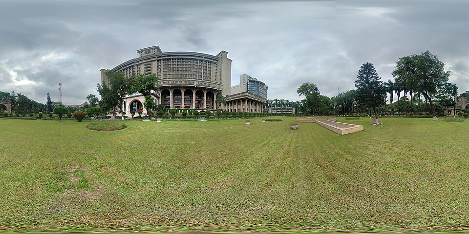
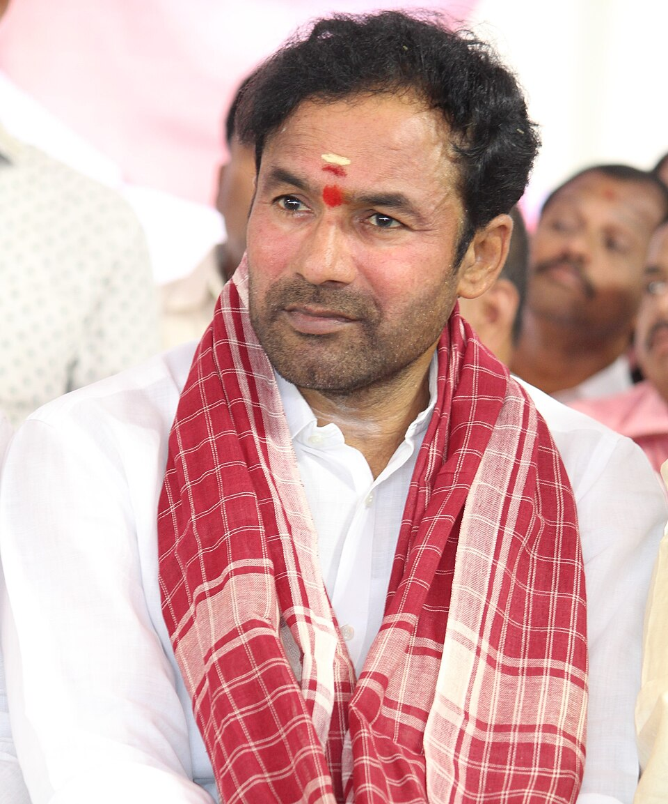

तिरछिलापल्ली सड़क दुर्घटना: पीएम मोदी ने मृतकों के परिजनों के लिए ₹2 लाख मुआवजे की घोषणा की
प्रधानमंत्री नरेंद्र मोदी ने तमिलनाडु के तिरुचिरापल्ली जिले में हुई सड़क दुर्घटना में जान गंवाने वालों के प्रति संवेदना व्यक्त की है और प्रधानमंत्री राष्ट्रीय राहत कोष से आर्थिक सहायता की घोषणा की है।
ताज़ा ख़बरें
अमेरिका के ओहायो में बेबी शॉवर के दौरान गोलीबारी, संदिग्ध समेत तीन की मौत
अमेरिका के ओहायो राज्य में एक गोद भराई समारोह के दौरान हुई गोलीबारी में संदिग्ध हमलावर समेत तीन लोगों की मौत हो गई और एक महिला घायल हो गई। पुलिस मामले की जांच कर रही है।

अंतरराष्ट्रीयगंगा जल बंटवारा संधि: ढाका में भारत-बांग्लादेश की संयुक्त समिति की बैठक जारी
भारत और बांग्लादेश के बीच गंगा जल बंटवारा संधि के कार्यान्वयन को लेकर ढाका में संयुक्त समिति की बैठक चल रही है। यह समिति दोनों देशों के बीच जल संसाधनों के प्रबंधन की देखरेख करती है।
 राष्ट्रीय
राष्ट्रीयवृंदावन के बांके बिहारी मंदिर की एलईडी स्क्रीन पर वेब सीरीज चलने से नाराजगी
वृंदावन के प्रसिद्ध बांके बिहारी मंदिर परिसर में लगी एलईडी स्क्रीन पर वेब सीरीज चलने का वीडियो वायरल होने के बाद गोस्वामी समाज में भारी नाराजगी है। सेवायतों ने मंदिर प्रबंधन की व्यवस्थाओं पर सवाल उठाए हैं।
 राष्ट्रीय
राष्ट्रीयकांग्रेस दिसंबर में शुरू करेगी 'वोट चोरी' के खिलाफ राष्ट्रव्यापी अभियान
कांग्रेस पार्टी दिसंबर में भोपाल से 'वोट चोरी' के खिलाफ देशव्यापी आंदोलन शुरू करेगी। राहुल गांधी और प्रियंका गांधी वाड्रा इस अभियान का नेतृत्व करेंगे।
 अंतरराष्ट्रीय
अंतरराष्ट्रीयविदेश मंत्री एस. जयशंकर ने नेपाल के प्रधानमंत्री बालेन शाह और नीदरलैंड के विदेश मंत्री से की मुलाकात
विदेश मंत्री एस. जयशंकर ने दिल्ली में नेपाल के प्रधानमंत्री बालेन शाह और नीदरलैंड के विदेश मंत्री टॉम बेरेंडसन से मुलाकात की। बैठकों में व्यापार, ऊर्जा, तकनीक और द्विपक्षीय संबंधों को मजबूत करने पर चर्चा हुई।
 अंतरराष्ट्रीय
अंतरराष्ट्रीयदक्षिण चीन सागर आचार संहिता पर चीन और आसियान के बीच नहीं बनी सहमति
फिलीपींस की अध्यक्षता में हुए शिखर सम्मेलन में दक्षिण चीन सागर के लिए आचार संहिता को अंतिम रूप देने का प्रयास विफल रहा। बाध्यकारी नियमों और भौगोलिक दायरे को लेकर विवाद बना हुआ है।
टेकअसम सरकार लाएगी अपना अर्थ ऑब्जर्वेशन सैटेलाइट नेटवर्क 'AssamSAT'
असम सरकार ने अपना खुद का अर्थ ऑब्जर्वेशन सैटेलाइट नेटवर्क 'AssamSAT' बनाने की योजना बनाई है। इस पर करीब 600 करोड़ रुपये की लागत आएगी और इससे डेटा खर्च में भारी कमी आने की उम्मीद है।
 राष्ट्रीय
राष्ट्रीयप्रधानमंत्री नरेंद्र मोदी ने गुजरात के विकास का श्रेय भाजपा कार्यकर्ताओं को दिया
प्रधानमंत्री नरेंद्र मोदी ने वर्चुअल माध्यम से गुजरात भाजपा के दीवाली स्नेह मिलन कार्यक्रम को संबोधित करते हुए राज्य के विकास का श्रेय कार्यकर्ताओं को दिया और सार्वजनिक जीवन में अपने 25 साल पूरे होने को याद किया।
खेलएशिया कप राइजिंग स्टार्स: नेपाल और पाकिस्तान ए के खिलाफ फ्लॉप रहे रिंकू सिंह
कतर के दोहा में खेले जा रहे एशिया कप राइजिंग स्टार्स 2026 में इंडिया ए के उप-कप्तान रिंकू सिंह नेपाल और पाकिस्तान ए के खिलाफ शुरुआती दोनों मैचों में बड़ा स्कोर बनाने में नाकाम रहे।
अंतरराष्ट्रीयभारत दौरे पर आए पाकिस्तानी मंत्री मुसादिक मलिक ने आतंकवाद पर साक्ष्य आधारित चर्चा की वकालत की
एसएससी के एक कार्यक्रम में भारत आए पाकिस्तानी मंत्री मुसादिक मलिक ने आतंकवाद के मुद्दे पर साक्ष्य आधारित और सामूहिक चर्चा की बात कही है। उन्होंने कहा कि आतंकवाद से पूरा क्षेत्र प्रभावित है।
 खेल
खेलराइजिंग स्टार्स एशिया कप: पाकिस्तान ए के खिलाफ अभिषेक शर्मा की आक्रामक पारी
राइजिंग स्टार्स एशिया कप में पाकिस्तान ए के खिलाफ मुकाबले में अभिषेक शर्मा ने 42 गेंदों में 70 रनों की शानदार पारी खेली। टीम इंडिया ए को इस मैच में 314 रनों का लक्ष्य मिला था।
राष्ट्रीयएक दूजे के लिए फिल्म धुरंधर से बड़ी हिट थी: राकेश बेदी
गोवा में आयोजित 57वें अंतरराष्ट्रीय फिल्म महोत्सव में अभिनेता राकेश बेदी ने अपनी 1981 की फिल्म 'एक दूजे के लिए' को 'धुरंधर' से बड़ी हिट बताया और अपनी पुरानी फिल्मों की सफलता को याद किया।
राष्ट्रीयपुणे: चार मंजिला आवासीय इमारत की पार्किंग में लगी आग, 35 लोगों को सुरक्षित बचाया
पुणे के कोंढवा इलाके में रविवार तड़के एक चार मंजिला इमारत की पार्किंग में आग लगने से 18 वाहन जल गए। दमकल विभाग ने छत पर फंसे 35 लोगों को सुरक्षित बाहर निकाला।
व्यापारघी और नारियल तेल से बढ़ सकता है खराब कोलेस्ट्रॉल, आईसीएमआर अध्ययन
भारतीय चिकित्सा अनुसंधान परिषद के अध्ययन के अनुसार, मूंगफली तेल की तुलना में घी और नारियल तेल के इस्तेमाल से शरीर में एलडीएल कोलेस्ट्रॉल बढ़ने की आशंका अधिक रहती है।
अंतरराष्ट्रीयभारत के न्योते पर द्विपक्षीय बातचीत को तैयार हैं पाक मंत्री मुसादिक मसूद मलिक
पाकिस्तान के मंत्री मुसादिक मसूद मलिक ने कहा है कि आतंकवाद और सिंधु जल संधि जैसे मुद्दों पर भारत के साथ द्विपक्षीय बातचीत के लिए उन्हें अब तक कोई औपचारिक आमंत्रण नहीं मिला है।
 खेल
खेलसैयद मुश्ताक अली ट्रॉफी: भुवनेश्वर और यश दयाल के दम पर झारखंड से जीता उत्तर प्रदेश
सैयद मुश्ताक अली ट्रॉफी 2026 के रोमांचक मुकाबले में उत्तर प्रदेश ने डिफेंडिंग चैंपियन झारखंड को 12 रनों से हराया। तेज गेंदबाज भुवनेश्वर कुमार और यश दयाल ने अंतिम ओवरों में शानदार गेंदबाजी कर दिलाई जीत।
राष्ट्रीयहैदराबाद में सुरक्षा बढ़ाई गई, मुंबई हमले की तर्ज पर धमकी भरा ईमेल मिला
मुंबई हमले की बरसी पर हैदराबाद में संभावित आतंकवादी हमले की धमकी मिलने के बाद पुलिस ने सुरक्षा कड़ी कर दी है। ईमेल में लश्कर-ए-तैयबा के सदस्य की मौत का बदला लेने की बात कही गई है।
राष्ट्रीयशशि थरूर बोले- पाकिस्तान पहले आतंकी ढांचा खत्म करे, तभी द्विपक्षीय वार्ता संभव
कांग्रेस सांसद शशि थरूर ने कहा है कि पाकिस्तान से बातचीत तभी संभव है जब वह आतंकवाद को रोके। साथ ही उन्होंने देश में रोजगार की स्थिति और कॉरपोरेट टैक्स कटौती के असर पर भी चिंता जताई।
राष्ट्रीयराहुल गांधी ने बीजेपी और आरएसएस पर साधा निशाना, धार्मिक परंपराओं की समझ न होने का लगाया आरोप
लोकसभा में विपक्ष के नेता राहुल गांधी ने बीजेपी और आरएसएस पर तीखा हमला बोला है। उन्होंने एलीफेंटा गुफाओं की अर्धनारीश्वर मूर्ति की तस्वीर शेयर करते हुए उन पर धार्मिक परंपराओं की समझ न होने का आरोप लगाया।
व्यापारFSSAI ने बिसलेरी के खिलाफ केस की दी मंजूरी, पैकेज्ड पानी का सैंपल असुरक्षित
खाद्य नियामक FSSAI ने बिसलेरी इंटरनेशनल के खिलाफ कानूनी कार्रवाई की मंजूरी दी है। जांच में कंपनी के पैकेज्ड पेयजल सैंपल में तय सीमा से अधिक खतरनाक रसायन मिले हैं।
 अंतरराष्ट्रीय
अंतरराष्ट्रीयपेरिस में महंगाई के खिलाफ प्रदर्शन हिंसक, पुलिस ने दागे आंसू गैस के गोले
फ्रांस की राजधानी पेरिस में बढ़ती महंगाई के खिलाफ हो रहा प्रदर्शन हिंसक हो गया है। हालात को नियंत्रित करने के लिए पुलिस को आंसू गैस के गोले दागने पड़े।
राष्ट्रीयरामायण में कुंभकर्ण के रोल के लिए फैसल मलिक को भूलनी पड़ी पारंपरिक एक्टिंग
रणबीर कपूर की फिल्म 'रामायण' में कुंभकर्ण का किरदार निभा रहे अभिनेता फैसल मलिक ने बताया कि इस वीएफएक्स-आधारित फिल्म के लिए उन्हें अपनी पारंपरिक एक्टिंग शैली को छोड़ना पड़ा था।
राष्ट्रीयपंजाब के तरणतारण में बीएसएफ और पुलिस ने खेत से बरामद किए हथियार और हेरोइन
पंजाब के तरणतारण जिले में भारत-पाकिस्तान सीमा के पास एक खेत से ड्रोन के जरिए गिराई गई संदिग्ध खेप बरामद हुई है। बीएसएफ और पंजाब पुलिस की संयुक्त कार्रवाई में पिस्तौल, कारतूस और हेरोइन मिली है।

राष्ट्रीयअभिनेता प्रभास ने हैदराबाद में नशा मुक्त भारत अभियान का किया समर्थन
साउथ अभिनेता प्रभास ने केंद्रीय मंत्री जी. किशन रेड्डी से मुलाकात के बाद केंद्र सरकार के 'नशा मुक्त भारत' अभियान को समर्थन देने का फैसला किया है।
राष्ट्रीयमाता-पिता और दादी को खोने के बाद अफसर बनीं एकता आसवानी
माता-पिता और दादी के निधन के बाद कठिन परिस्थितियों का सामना कर सिविल सेवा परीक्षा पास करने वाली एकता आसवानी अपनी शादी की तस्वीरों को लेकर चर्चा में हैं।
राष्ट्रीयमध्य प्रदेश के बालाघाट में हत्या मामला, पिता-पुत्र समेत 5 गिरफ्तार
मध्य प्रदेश के बालाघाट जिले में 20 वर्षीय कॉलेज छात्र की हत्या के मामले में पुलिस ने पांच आरोपियों को गिरफ्तार किया है। प्रेम प्रसंग के चलते हत्या की साजिश रची गई थी।
राष्ट्रीयमहाराष्ट्र सूखे पर आनंदराज अंबेडकर का बयान, सरकार की जल नीति पर उठाए सवाल
रिपब्लिकन सेना प्रमुख आनंदराज अंबेडकर ने महाराष्ट्र में सूखे को लेकर राज्य सरकार की जल संरक्षण नीति पर सवाल उठाए हैं। उन्होंने जालना में एक कार्यक्रम के दौरान सरकार के काम करने के तरीके की आलोचना की।
राष्ट्रीयपश्चिम बंगाल: बीजेपी विधायक रेखा पात्रा की हालत गंभीर, वेंटिलेटर पर
पश्चिम बंगाल से बीजेपी विधायक रेखा पात्रा की तबीयत अचानक बिगड़ने के बाद उन्हें कोलकाता के एक निजी अस्पताल में वेंटिलेटर पर रखा गया है। मेडिकल रिपोर्ट में शरीर में कीटनाशक के अंश मिलने की बात सामने आई है।
राष्ट्रीयमहाराष्ट्र का आदिवासी गांव गुर्हालपानी बना 'डॉक्टरों का गांव', 10 साल में दिए 11 डॉक्टर
महाराष्ट्र और मध्य प्रदेश की सीमा पर सतपुड़ा के पहाड़ों के बीच स्थित आदिवासी गांव गुर्हालपानी ने पिछले दस साल में 11 युवा डॉक्टर दिए हैं, जिससे यह गांव एक नई मिसाल बन गया है।
राष्ट्रीयगोंडा में चरित्र शक के चलते पत्नी की कुल्हाड़ी से हत्या, आरोपी पति गिरफ्तार
उत्तर प्रदेश के गोंडा में चरित्र पर शक के चलते एक व्यक्ति ने अपनी पत्नी की कुल्हाड़ी से वार कर हत्या कर दी। बेटे की सूचना पर पुलिस ने आरोपी को गिरफ्तार कर लिया है।
टेकएनविया विवाद: एलिस हुआंग के हटने के बाद सिंगापुर में मेगास्पीड का कामकाज ठप
एनविया से जुड़े विवाद के केंद्र में रहीं एलिस हुआंग के बाहर होने के बाद सिंगापुर स्थित कंपनी मेगास्पीड का कामकाज बंद हो गया है। हालांकि, इससे जुड़ी टीम अब 'नोवागेट क्लाउड' के नाम से नया वेंचर चला रही है।
 अंतरराष्ट्रीय
अंतरराष्ट्रीयव्लादिमीर पुतिन ने की भारत की प्राचीन सभ्यता और भाषाई विविधता की प्रशंसा
रूसी राष्ट्रपति व्लादिमीर पुतिन ने भारत की प्राचीन सभ्यता और भाषाई विविधता की सराहना की है। पीएम मोदी के साथ हुई बातचीत में रक्षा, ऊर्जा और व्यापार समेत विभिन्न मुद्दों पर चर्चा हुई।
राष्ट्रीयशशि थरूर ने खेला GTA-6, नोटबंदी की तुलना को लेकर केंद्र सरकार पर साधा निशाना
कांग्रेस सांसद शशि थरूर ने लोकप्रिय वीडियो गेम GTA-6 खेलते हुए केंद्र सरकार पर निशाना साधा। उन्होंने नोटबंदी की तुलना करते हुए देश में अभिव्यक्ति की आजादी पर सवाल उठाए।
राष्ट्रीयतमिलनाडु और केरल में भारी बारिश का अनुमान, उत्तर भारत में कोहरे की चेतावनी
मौसम विभाग ने तमिलनाडु और केरल में भारी बारिश का अनुमान जताया है। इसके साथ ही उत्तर भारत के कई राज्यों में घने कोहरे और पूर्वोत्तर में बारिश की चेतावनी जारी की गई है।
 व्यापार
व्यापारपीएम मोदी की अपील और सोने के दाम: क्या कीमतों में गिरावट की वजह सोना खरीदना कम करना है
प्रधानमंत्री नरेंद्र मोदी के सोना न खरीदने की अपील के दावों और सोने की कीमतों में आई भारी गिरावट के बीच आर्थिक विशेषज्ञों ने इसके पीछे अंतरराष्ट्रीय कारणों को मुख्य वजह बताया है।
राष्ट्रीयपूर्व क्रिकेटर सुरेश रैना का दिल्ली स्थित आलीशान घर, देखें तस्वीरें
पूर्व भारतीय क्रिकेटर सुरेश रैना ने अपने दिल्ली स्थित वसंत कुंज बंगले का टूर कराया है। घर के एक हिस्से में उनके क्रिकेट करियर और 2011 विश्व कप जीत की यादें सजी हुई हैं।
खेलपूर्व क्रिकेटर सुरेश रैना ने कराया दिल्ली आवास का टूर, घर में सजी हैं खेल की यादें
पूर्व भारतीय क्रिकेटर सुरेश रैना ने अपने दिल्ली स्थित आवास का वीडियो टूर कराया है। वसंत कुंज स्थित इस घर में क्रिकेट करियर की यादें और एक आधुनिक रसोईघर के साथ टेरेस पर मिनी गार्डन भी है।
 अंतरराष्ट्रीय
अंतरराष्ट्रीयनेपाल के प्रधानमंत्री बालेन शाह आधिकारिक यात्रा पर नई दिल्ली पहुंचे
नेपाल के प्रधानमंत्री बालेन शाह नई दिल्ली पहुंच गए हैं। अपनी इस यात्रा के दौरान दोनों देशों के बीच द्विपक्षीय आर्थिक संबंधों और व्यापार को मजबूत करने पर चर्चा होगी।
राष्ट्रीयउत्तर प्रदेश टीजीटी भर्ती के आवेदन की अंतिम तारीख बढ़कर 28 नवंबर हुई
उत्तर प्रदेश शिक्षा सेवा चयन आयोग ने 17,735 टीजीटी पदों के लिए आवेदन की अंतिम तारीख 28 नवंबर 2026 तक बढ़ा दी है। हाईकोर्ट के आदेश के बाद यह फैसला लिया गया है।